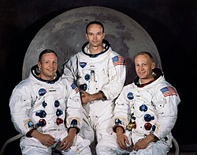
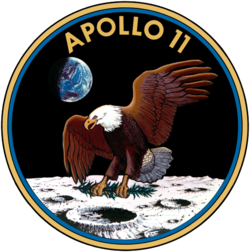
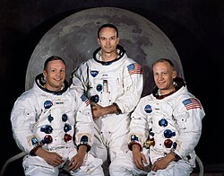
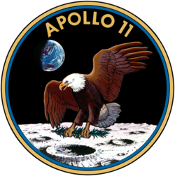

Programme Apollo
Le programme Apollo, mené par la NASA, a permis aux États-Unis de réaliser le premier alunissage le 20 juillet 1969 avec Apollo 11. Neil Armstrong et Buzz Aldrin ont été les premiers humains à marcher sur la Lune.
 Le programme Apollo, mené par la NASA, a permis aux États-Unis de réaliser le premier alunissage le 20 juillet 1969 avec Apollo 11. Neil Armstrong et Buzz Aldrin ont été les premiers humains à marcher sur la Lune.
 